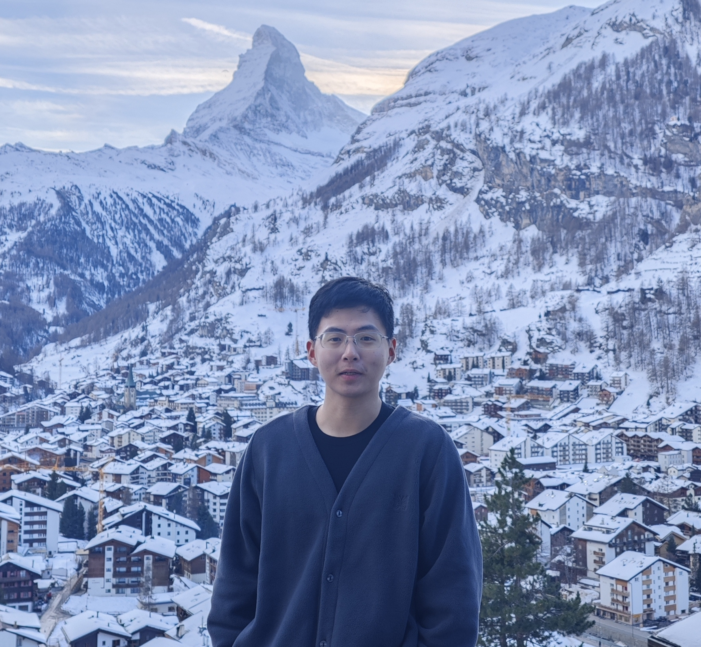

Postdoctoral Research Fellow,
The Chinese University of Hong Kong
Email: yangliu005 (at) cuhk (dot) edu (dot) hk
GitHub / Google Scholar

Bio
I am a Postdoctoral Research Fellow at The Chinese University of Hong Kong, under the supervision of Prof. Hong CHENG.
Previously, I received my Ph.D. from the Hong Kong University of Science and Technology under the supervision of Prof. Jia Li and Prof. Fugee Tsung.
During my Ph.D., I worked as research intern at Tencent AI Lab, collaborating with Dr. Yu Rong.
Before that, I received M.S. and B.S. degrees from Sun Yat-sen University.
Research
My research lies in multiple fields of AI for science, leveraging machine learning to accelerate scientific simulation and enable scientific discovery.
Primarily, I work on atmospheric science, including Weather Foundation Models, Subseasonal-to-seasonal Forecasting, and Climate modeling, with the goal of advancing the understanding and prediction of the Earth system.
Building on this foundation, I would like to develop AI methods at the intersection of (1) climate and energy: renewable power forecasting and extreme event prediction; (2) climate and materials: automatic discovery of decarbonization and energy storage materials.
Recent News
- [May 2026] Our paper WeatherSyn was accepted to ICML'2026.
- [Jan 2026] Three papers were accepted to ICLR'2026.
- [Jan 2026] One paper was accepted to CVPR'2026.
- [Sep 2025] Two papers were accepted to NeurIPS'2025.
- [Jul 2025] I have joined CUHK as a Postdoctoral Research Fellow.
- [May 2025] Two papers were accepted to KDD'2025.
Selected Publications [Full List]
-
WeatherSyn: An Instruction Tuning MLLM For Weather Forecasting Report Generation
Zinan Zheng, Yang Liu*, Nuo Chen*, Juepeng Zheng, Hong Cheng, Jia Li
International Conference on Machine Learning (ICML), 2026.
-
TianQuan-S2S: A Subseasonal-to-Seasonal Global Weather Model via Incorporate Climatology State
Guowen Li, Xintong Liu, Yang Liu*, Mengxuan Chen, Shilei Cao, Xuehe Wang, Juepeng Zheng*, Jinxiao Zhang, Haoyuan Liang, Lixian Zhang, Jiuke Wang, Meng Jin, Hong Cheng, Haohuan Fu
International Conference on Learning Representations (ICLR), 2026.
-
Beyond Structure: Invariant Crystal Property Prediction with Pseudo-Particle Ray Diffraction
Bin Cao, Yang Liu*, Longhan Zhang, Yifan Wu, Zhixun Li, Yuyu Luo, Hong Cheng, Yang Ren*, Tongyi ZHANG*
International Conference on Learning Representations (ICLR), 2026.
-
Mesh Interpolation Graph Network for Dynamic and Spatially Irregular Global Weather Forecasting
Zinan Zheng, Yang Liu*, Jia Li*
Neural Information Processing Systems,(NeurIPS), 2025.
-
Equivariant and Invariant Message Passing for Global Subseasonal-to-seasonal Forecasting
Yang Liu, Zinan Zheng, Yu Rong, Deli Zhao, Hong Cheng, Jia Li*
ACM SIGKDD Conference on Knowledge Discovery and Data Mining (KDD), 2025.
-
Cirt: Global Subseasonal-to-seasonal Forecasting with Geometry-inspired Transformer
Yang Liu^, Zinan Zheng^, Jiashun Cheng, Fugee Tsung, Deli Zhao, Yu Rong*, Jia Li*
International Conference on Learning Representations (ICLR), 2025.
-
SimXRD-4M: Big Simulated X-ray Diffraction Data and Crystal Symmetry Classification Benchmark
Cao Bin^, Yang Liu^, Zinan Zheng^, Ruifeng Tan, Jia Li*, Tong-yi Zhang*
International Conference on Learning Representations (ICLR), 2025.
-
Relaxing Continuous Constraints of Equivariant Graph Neural Networks for Broad Physical Dynamics Learning
Zinan Zheng^, Yang Liu^, Jia Li*, Jianhua Yao, Yu Rong*
ACM SIGKDD Conference on Knowledge Discovery and Data Mining (KDD), 2024
-
SEGNO: Generalizing Equivariant Graph Neural Networks with Physical Inductive Biases
Yang Liu^, Jiashun Cheng^, Haihong Zhao, Tingyang Xu, Peilin Zhao, Fugee Tsung, Jia Li*, Yu Rong*
International Conference on Learning Representations (ICLR), 2024.
-
Human Mobility Modeling During the COVID-19 Pandemic via Deep Graph Diffusion Infomax
Yang Liu^, Yu Rong, Zhuoning Guo, Nuo Chen, Tingyang Xu, Fugee Tsung, Jia Li*
AAAI Conference on Artificial Intelligence (AAAI), 2023
Services
Journal & Conference Reviewer:- International Conference on Learning Representation (ICLR)
- Neural Information Processing Systems (NeurIPS)
- IEEE Conference on Computer Vision and Pattern Recognition (CVPR)
- ACM SIGKDD Conference on Knowledge Discovery and Data Mining (KDD)
- Association for the Advancement of Artificial Intelligence (AAAI)
- European Conference on Computer Vision (ECCV)
- IEEE Transactions on Knowledge and Data Engineering (TKDE)